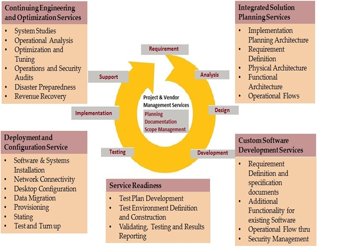

Telecom System Integration
Telecom System Integration
NEXT GENERATION OSS/BSS SOLUTIONS
Communication Service Providers are forced to become experts in rapid experimentation, and that implies having enormous operational dexterity. Telecoms must not only launch services quickly, they must also bill for them creatively and provision them efficiently to keep ahead. At a time when operational systems and OSS/BSS platforms are being stretched to their limits, it's crucial that revenue leaks, fraud, customer bad debt, and interconnect billing problems don't sink the business in the midst of the system juggling.OUR APPROACH
We have a global perspective on the Telecom industry in areas of Enterprise Architecture, Consulting, Quality Assurance and Managed Services. Our OSS/BSS solutions and services portfolio is ideally suited to fixed, mobile and converged carriers in fast growing countries as well as those facing fierce competition leading them into an IP transformation to deliver higher-value, secure user-centric services faster. As a result of its vast experience in the OSS/BSS segment, we have been able to offer end to end solutions at competitive pricing, with the flexibility to roll out services quickly to market & ability to integrate with speed in the existing environment.
STRATEGY CONSULTING for OSS / BSS
URS specializes in system integration, BSS/OSS technical consultancy and software development for software vendors and communication services providers (CSPs). We offer a high level of telecom expertise in the area of fulfillment, service assurance, billing though COTS as well as custom solutions, system integration and operations support. Our expertise and in-depth domain knowledge have helped service providers and SIs add value to their business across various geographies. Our state-of-the-art Development Centre in Bangalore, India enables faster and cost-effective implementation of various BSS and OSS solutions for our Telecom clients globally using B/OSS product stack including OBRM, OSM, ASAP, UIM, Siebel, ECE, Mediation, Interconnect and Network Optimization services.
Through our team of experienced and high-performing telecommunications and business professionals, we designs and implement the following OSS/BSS Solutions:
- Converged Mediation Solution
- Service Provisioning and Service Fulfillment solution
- Inter-operator Administration and Accounting solution (Inter Connect Billing Solution)
- Convergent Retail Billing Solution

VALUE ADDED SERVICES (VAS)
Constantly shifting consumer preferences and demand forces service providers to churn their content and application portfolio repeatedly. Sunken investments & shifting revenue paradigms make it difficult to make a business case for investing in Capex sapping platforms. Cut throat competition dictates rapid deployment of killer applications with the least TCO & quickest ROI.URS is partnering with few emerging service providers to boost communication capabilities for their subscribers.
OUR APPROACH
URS offers a portfolio of tools and services to develop enterprise mobility strategies so you can create a mobile enterprise that capitalizes on new business models, innovate products and services, and unlocks workforce productivity. With technology expertise and industry knowledge, our mobility consultants will work with you to develop your organization’s mobile blueprint and implement across a diverse range of mobile platforms and devices. URS will work with companies throughout their mobility journey to enable them to maximize the potential of their mobile implementation. We help in business transformation creating solutions tailored to your needs whether its location based services or mobile wallets. Our mobility services will change the ways your employees work by automating the processes and boost productivity which helps in measurable business value.
- Single platform for a wide variety of VAS services
- No requirement for integration of a new system for every new service
- Reduces the number of hardware nodes required significantly
- Testing and deployment of new services is speeded up
- Homogenous platforms making things easier to maintain
- Rich multi-modal applications via multiple user interfaces
- Modular construction: Pick and choose the features/interfaces required
STAFFING SOLUTIONS FOR TELECOM
The number of services that Telecoms operators, both mobile operators and fixed line carriers are offering their subscribers grows almost every day. As a result they are greatly fuelling the need for innovative applications to support the management and billing of these services.OUR APPROACH
Our recruitment consultants offer retained search, permanent and interim staffing solutions to local and international Telco’s (both fixed line and mobile), major and local systems integrators and consultancies to assist in fulfilling their global staffing needs.
Our consultants’ delivery capability spans the length and breadth of OSS and BSS applications
We cover roles including TECHNICAL CONSULTANTS, ARCHITECTS, DEVELOPERS, and PROGRAMME AND PROJECT MANAGERS.
TELECOM SYSTEM INTEGRATION
Telco’s must have the ability to offer new services to consumers and businesses, and to deliver and operate those services efficiently. Advances in communication services and technology have raised the customers’ expectations. But keeping up with these changes often means complex integration projects that can consume valuable time and resources. The most successful Telco’s achieve this agility through a number of next generation OSS products. For business consulting, system integration & testing, as well as software development services to design and implement their OSS strategies URS offers a complete end-to-end portfolio of services for network and system integration covering all aspects of pre-deployment, deployment and post-deployment.OUR APPROACH
We provide system integration in wireless infrastructure for various IT & Telecom networks widely used to transmit Voice, Video and Data over Internet / Intranet. We have developed expertise over the years in various solutions like Broadband Solutions, IP CCTV Surveillance, Wi-Fi Solutions & Vehicle Tracking Systems. We offer Value Added Services such as Site Survey, RF Planning, Network Engineering, Installation & Commissioning, Warranty and AMC to our customers. Our system integrators and architects are experts in systems integration & testing consulting resulting from decades of experience helping some of the largest communications services organizations. We help our clients leverage service-oriented architecture (SOA) to integrate applications and business processes.
Our experience, expertise and end-to-end approach to systems integration help you to reap the rewards while avoiding the pitfalls. We help you to:
- Consolidate your systems and improve their efficiency
- Transform your network environment without disrupting your customers
- Simplify and speed up the introduction of new services and technologies.
STRATEGY CONSULTING FOR TELECOM SYSTEM INTEGRATION
Solution Life-Cycle Management
With our Solution Life-Cycle Management service, you can safely evolve your solutions to match your changing business, technology and operational demands. You’ll be guided through each step of a solution’s life cycle to ensure that new technologies and features can be introduced quickly and used optimally and cost-effectively.
We address your business requirements and support the evolution of your end-user services by:
- Identifying opportunities
- Analyzing the impact of identified changes
- Recommending solutions
- Delivering integration projects of all sizes.
- Our life-cycle management service draws on our leading competence, global knowledge networks, tools and selected partners.
Success is the only option when tackling the delicate and technically complicated task of migrating data in a live network environment. You can rely on URS SYSTEMS for successful data-migration projects when you face the challenge of a technology shift, the introduction of new network nodes or vendor swap-outs. Multi-Vendor Verification
We make it easier for you to introduce new nodes and devices, and ensure that they support your offerings, regardless of the complexity of your network or a multitude of standards. We’ll help you verify the functionality of standardized interfaces and identify what you need to do to get your multi-vendor network in the best possible shape.
In both our labs and on your networks, we ensure that devices work end-to-end with all your services and applications.
ENTERPRISE MOBILITY SOLUTIONS
Rather than being an exception, Enterprise mobility is fast becoming a norm. Enterprises are of realizing the immense potential of mobility. Regardless of industry, the organization must get ahead of enterprise mobility demands to stay relevant. New ways of delivering products and services–and overall business value inside the four walls and with business partners and customers can be created by Enterprises that harness mobility. Mobility today offers newer business streams, but managing mobile implementation has become a much more complex affair. Companies need to look beyond the models they have been using to manage their IT and look for mobility-specific business models.With URS you select a partner that understands IT and the business, with expertise in integration, security and cross-platform mobile development.
OUR APPROACH
We provide real – time data sharing that empower your workforce and transform your enterprise which will influence how you run your business. Our enterprise mobility services automate your processes and boost productivity by changing the way your employees work by helping you achieve a customer centric mobility transformation. URS help companies leverage contextual data to reach out to their customers more effectively.
STRATEGY CONSULTING for OSS / BSS
URS offers a portfolio of tools and services to develop enterprise mobility strategies so you can create a mobile enterprise that capitalizes on new business models, innovate products and services, and unlocks workforce productivity. With technology expertise and industry knowledge, our mobility consultants will work with you to develop your organization’s mobile blueprint and implement across a diverse range of mobile platforms and devices. URS will work with companies throughout their mobility journey to enable them to maximize the potential of their mobile implementation. We help in business transformation creating solutions tailored to your needs whether its location based services or mobile wallets. Our mobility services will change the ways your employees work by automating the processes and boost productivity which helps in measurable business value.